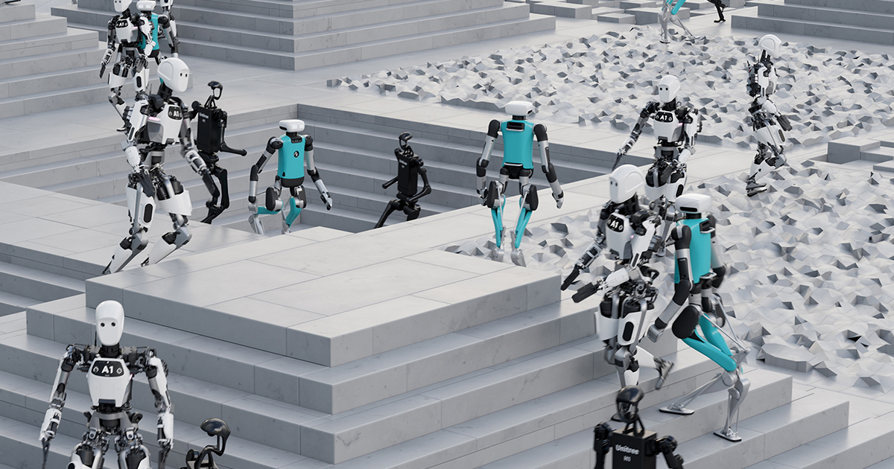

Why would you need to downgrade IsaacLab[1] ?
Some projects depend on several dependencies that are no longer supported on the newer versions of IsaacLab. For example, due to massive changes done to rsl-rl after version 3.1.2 you might need to downgrade since its too hard to migrate and in some cases might be impossible.
Introduction
If you tried to downgrade IsaacLab to version v2.3.2 and had the issue:
IsaacLab Module not found
This is due issues with the flatdict and the changes in support for several packages
To fix the issue run the following:
# Downgrade the following
pip install pip==23
pip install setuptools==65
pip install flatdict
# Run isaaclab imstall
./isaaclab.sh --installMake sure these packages are on the proper version so the Isaaclab works again.
To check on the rsl-rl version:
pip show rsl-rl-libThere are massive changes from the rsl-rl version 3.1.2 to later version 5.0.1
References
1. Mittal, M., Roth, P., Tigue, J., Richard, A., Zhang, O., Du, P., Serrano-Muñoz, A., Yao, X., Zurbrügg, R., Rudin, N., Wawrzyniak, L., Rakhsha, M., Denzler, A., Heiden, E., Borovicka, A., Ahmed, O., Akinola, I., Anwar, A., Carlson, M. T., … State, G. (2025). Isaac lab: A GPU-accelerated simulation framework for multi-modal robot learning. arXiv Preprint arXiv:2511.04831. https://arxiv.org/abs/2511.04831